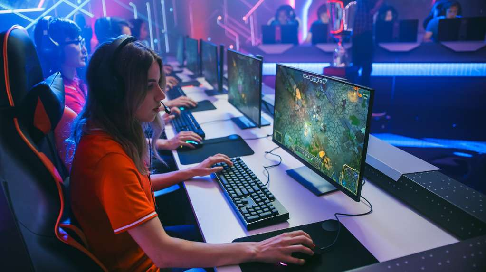
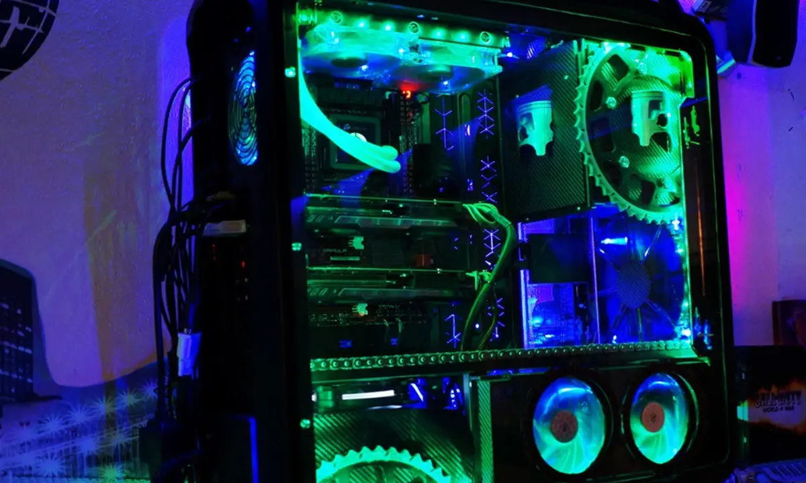

.png)
Todo gamer se ha enfrentado al mismo dilema: PC vs consola.
Se puede argumentar respecto a cuál de las dos es mejor, lo
que generalmente genera discusiones acaloradas. Pero nosotros
estamos aquí para presentar los hechos. ¿Cuál de las dos es más
barata? ¿Cuál ofrece los mejores gráficos? ¿Cuál se gana el premio
en competencia multijugador? Si estás tratando de decidir entre PC
o consola, en este artículo te explicamos las ventajas y desventajas
de cada plataforma.
| Nombre | Precio | Ram | Almacenamiento |
|---|---|---|---|
| PlayStation 5 | 800$ | 16 Gb | 825 Gb |
| PC Gaming | 1300$ | 16 Gb | 480 Gb |
| Xbox Series X | 600$ | 16 Gb | 900 Gb |
Para un gamer de computadora, existe una amplia variedad de opciones
y precios, ya sea que quieras armar tu PC propia o comprar una comercial.
Los precios también pueden variar dependiendo de si es una PC de gama
baja, media o alta. Además, la mayoría debe actualizarse en algún momento
con nuevo hardware. Esto significa que las PC gamers terminan siendo más
costosas que las consolas, tanto en la inversión inicial como a largo plazo.
 ¿Quieres jugar con la máxima resolución posible? Entonces necesitas una
¿Quieres jugar con la máxima resolución posible? Entonces necesitas una
PC gamer. Con una computadora, puedes elegir un procesador con gráficos
integrados o una tarjeta de video dedicada, es decir, tienes el control de la
nitidez de las imágenes. Con una PC también puedes jugar en varias pantallas
a la vez si tienes el hardware adecuado. Esto no es posible con una consola.

En términos de números puros, una computadora ofrece más títulos
y no tiene la desventaja de estar tan segregado por generación. Mientras
que los juegos para consola se producen generalmente para una sola generación
lo que quiere decir que los dueños de un PS4 no podrán jugar los últimos títutlos
ya que la mayoría se lanzan para PS5.

En términos de números puros, una computadora ofrece más títulos
y no tiene la desventaja de estar tan segregado por generación. Mientras
que los juegos para consola se producen generalmente para una sola generación
lo que quiere decir que los dueños de un PS4 no podrán jugar los últimos títutlos
ya que la mayoría se lanzan para PS5.